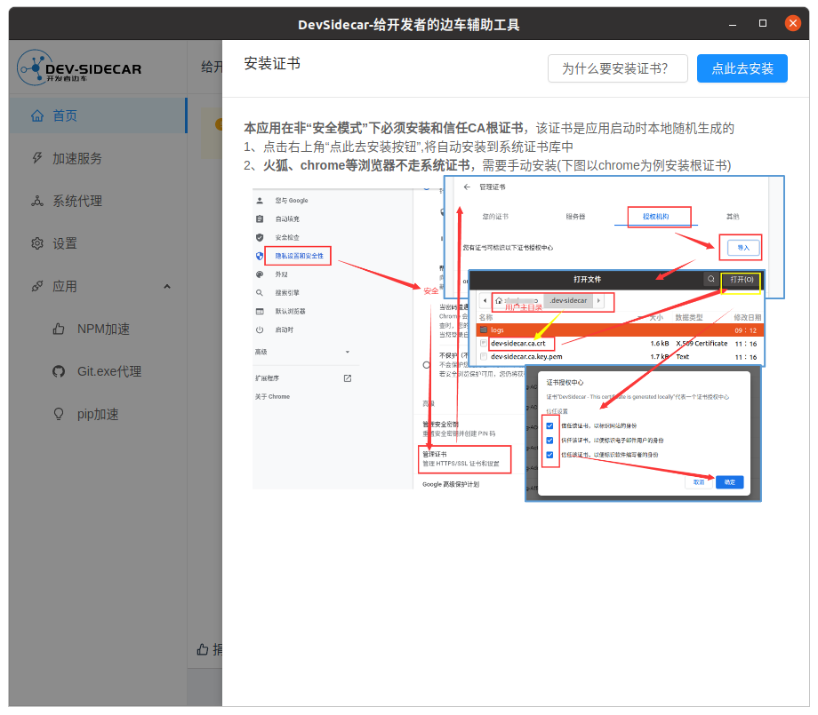
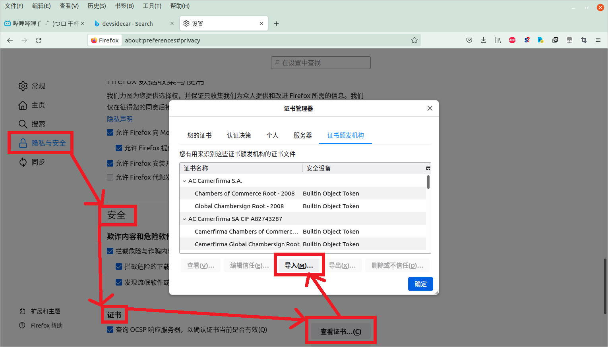
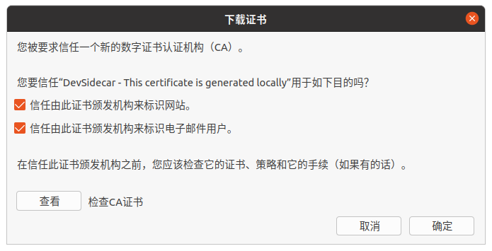
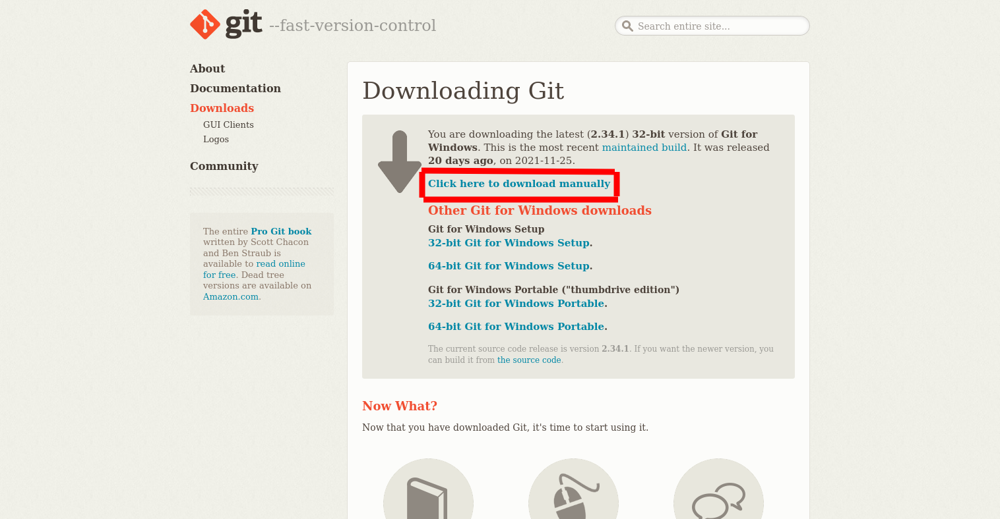
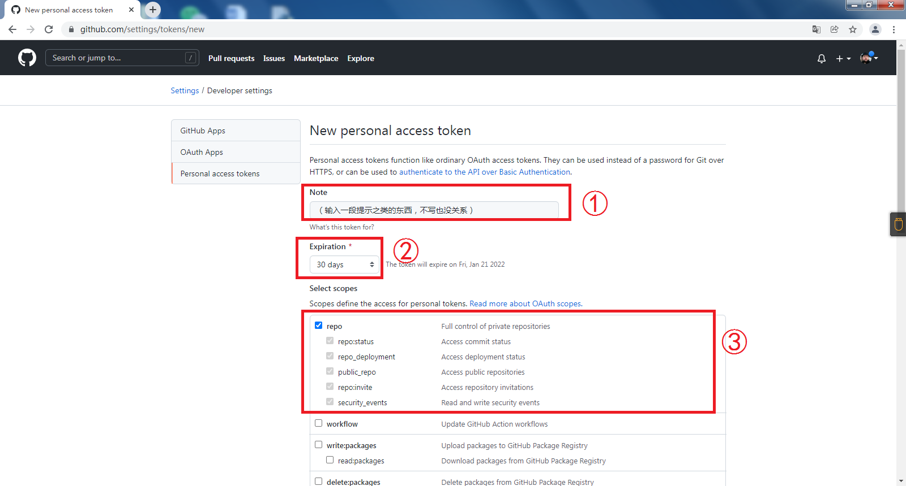
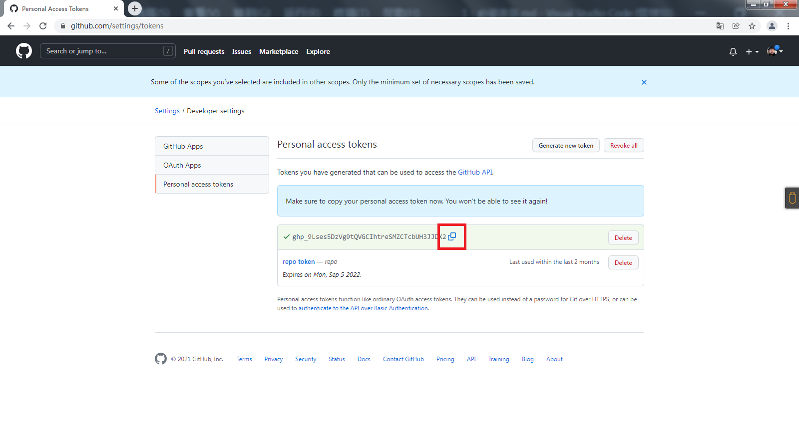

Github 必要准备
我们发现没有文字版教程的情况下，大家很难跟上节奏。所以我们决定继续写文字。
什么是Github？什么是Git？
GitHub是一个面向开源及私有软件项目的托管平台。因为只支持Git作为唯一的版本库格式进行托管，故名GitHub。在Github上，你可以分享自己的代码，或者学习他人的代码；可以托管自己的代码，实现版本管理；可以在协议许可的情况下使用他人的代码；可以使用Github和团队成员协作。
Git则是一个开源的分布式版本控制系统，可以有效、高速地处理从很小到非常大的项目版本管理。我们使用Github，就必须了解Git。
额……上面的东西是不是说了和没说一样？
安装Dev-sidecar
由于一些懂的都懂的原因，Github访问会遇到一些问题。为此，我们需要一些工具。
前往这里下载。
安装完成后，打开软件，会看到一个类似这样的页面：

这里你们的页面和我的是不一样的，按照自己的页面去做。图片很详细，不用我多讲了吧。
这一步完成之后，还不行。我们只是把根证书安装在了系统里，但是Firefox里还需要再安装。打开浏览器，你可以看到右上角有一个三条杠的按钮。点击它会出现一个下拉栏，你可以在里面找到“设置”选项。

如上图，在设置里选到“隐私与安全，在“安全-查看证书”里点“导入”，接下来你需要找到.crt文件的位置，并选中。
那个.crt文件在 C:\Users\（用户名）.dev-sidecar 文件夹内。社团的计算机用户名是Administrator，也就是说文件在 C:\Users\Administrator.dev-sidecar 路径下。如果你没有Users文件夹，那就是“用户”文件夹。

接下来弹出这样一个页面。注意：两个选项都要勾选！然后点击确定。
如果一切正常的话，访问GithubUserContent就会自动跳转到Github。这样就成功了。另外，以后访问Github的时候，一定要加上https，即：https://github.com。
安装Git
有了这个工具，我们可以更方便地访问Github了。那么，使用Github就一定要使用Git；我们先去安装Git。
搜索引擎搜索Git，或者直接访问 https://git-scm.com/ ，就可以找到Git的官网。在右下角你能看到一个长的像电脑屏幕的玩意，里面有一个“Download for Windows”的按钮。点进去之后是这样一个页面：

点击红色框里那个，就可以下载了。
下载完成之后，点击打开安装包来安装。接着是一大堆英文的东西，看不懂就算了，你只需要把同意协议的页面勾了，一路Next就好了。
完成之后，在一个文件夹里右键，就可以看到“Git Bash Here”。如果有这个，就安装成功了。
使用Github
首先创建一个Github账号。这个我真的不想讲了，就点那个“Sign Up”，一路跟着走就好。如果看不懂就复制到机翻里翻译。
创建完成之后，我们还需要申请一个token。token是什么？
我们登录网站需要密码。密码这东西给别人知道了，别人就可以随意操纵你的账号。token这东西是一段长得乱七八糟的文本，类似于密码，不过一个账号可以同时有很多token，但是只会有一个密码。
在登录Github网址时，我们依然使用密码而非token。但是使用Git推文件到Github的时候，在那个输密码的框里就需要使用token。
那么接下来我们创建一个token。登录Github，点击右上角你的大头像，在下拉栏里点击Settings。然后在左边的菜单栏里找到Developer Settings，暴扣它。在跳转到的页面里有Personal access tokens，再暴扣它。你可以在这个页面里找到Generate new token，点！
接下来你就进入了创建新token的页面。如图：

第一个框里的是提示，告诉你自己它是干什么的；第二个框里是过期的日期，默认30天，你可以改成no expiration让它永不过期；第三个框（以及下面一长串东西）是这个token的权限，包括修改repo、创建删除repo等。框里选的部分是修改repo（不包括删除）的所有权限，我们只需要把这个框整个勾起来就好了。然后翻到最下面，点Generate token完成生成。

然后点击图中框起来的那个按钮就可以复制了。注意，请一定记下来，比如写成txt放在u盘里，不然下次它就看不到了。不过忘了也没关系，点到那个token里面，可以再次生成。
别想偷偷使用我的token，那个token我已经删掉了。